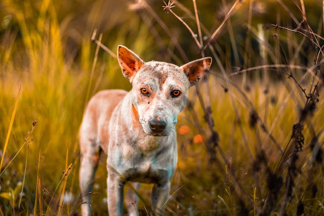
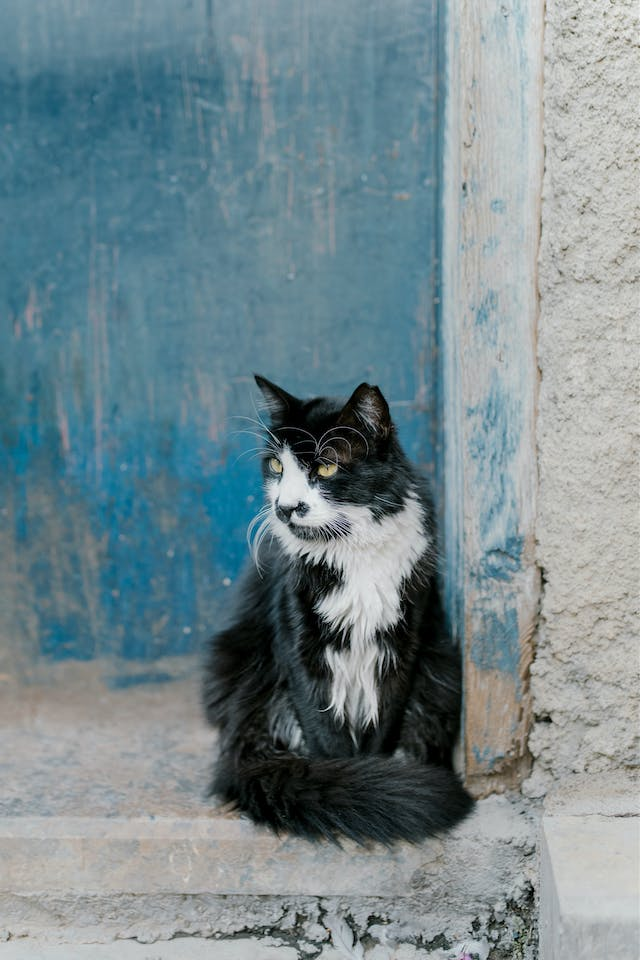

Pepito, el perro rescatado
Pepito era un perro que fue abandonado en la calle. Estaba en
muy mal estado, desnutrido y con heridas. Gracias a las
donaciones de nuestros padrinos y madrinas, pudimos rescatarlo y
llevarlo a nuestros hogares de paso. Pepito ha recibido la
atención veterinaria que necesitaba y ahora está sano y feliz.

Mia, la gata adoptada
Mia era una gata que fue abandonada en un refugio. Era tímida y
desconfiada. Ahora puede contar una historia diferente, pudimos
ayudarla a encontrar un hogar lleno de amor donde tendrá todos
los cuidados y amor posible. Mia ahora vive con una familia
amorosa que la adora.